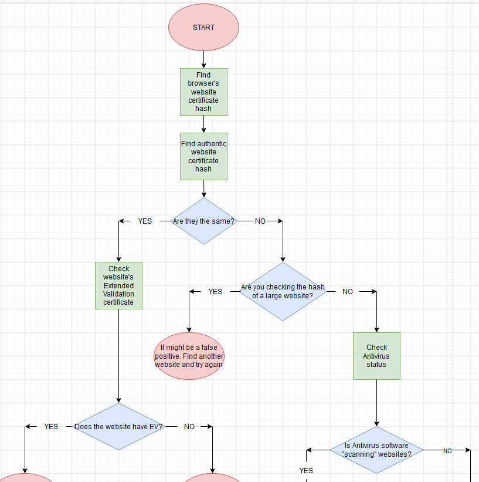
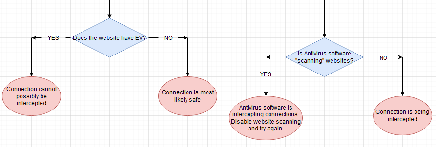

A few decades ago, most people connected to the internet using a protcol called HTTP (GRC, 2020). According to the Gibson Research Corporation, HTTPS, a more secure verison of HTTP that "authenticate[s] [and] encrypt[s]" (GRC, 2020) connections, did exist at the time but had to be used "sparingly" (GRC, 2020). In order to encrypt these connections, HTTPS relies on Certificate Authorities who are considered to be very trustworthy (GRC, 2020). Certificate Authorities sign digital certificates that they approve with "an assertion of its identity" (GRC, 2020) in order to prove authenticity of the connection.
Eventually, we got to a point to where all connections could be encrypted in HTTPS but not everyone agreed with that idea. In order to bypass this encryption, the HTTPS Proxy Appliance was made. A HTTPS Proxy Appliance is a method of creating a fake website certificate in order to decrypt the data between the browser and a website. These Proxy Appliances could be considered a Man in the Middle or a person/group of people intercepting data between two devices (GRC, 2020). A MITM would intercept any information transfered into the Proxy Appliance and "circumvent our... guarantee of Internet browser privacy and security" (GRC, 2020) to whoever configured the proxy.
While it's not possible to prevent SSL Interception, it is able to be "reliably detected" (GRC, 2020) because of way these fake certificates are made. This can be done by checking the hash of the security certificate and comparing it to the authentic security certificate hash. Hashes are "complex mathematical algorithms which carefully process every single bit" (GRC, 2020) of information from the source. A good hash would be considered to be "new, strong, and secure" (GRC, 2020) in order to create the best representation of that data. If there is a match between the two, the connection is not being intercepted (GRC, 2020).
In some instances, some websites might have multiple certificates for different purposes which would cause a false positive, or would trick you into thinking it was not secure if you tried to verify that different hash with a more well known one. A false negative on the other hand, would be a Proxy Appliance tricking you into thinking that the webpage was not being intercepted (GRC, 2020). In theory, "specific websites... could be excluded from SSL-interception, decryption and logging," (GRC, 2020) as a way to lead you to believe there was no interception occuring.
Higher authorities should have a right to eavesdrop on your connection within reason. They should have a good reason to intercept such as monitoring employees at work, preventing students from accessing materials they shouldn't have, and more. Higher authorities however, should not be able to snoop on your connection while at home, or casually using the internet outside of school/work because that is outside of their jurisdiction. There is a clear difference between a privacy and security invasion versus ensuring your employees are doing what they are supposed to be doing at work.


Gibson Research Corporation. (2020). Fingerprints. https://www.grc.com/fingerprints.htm